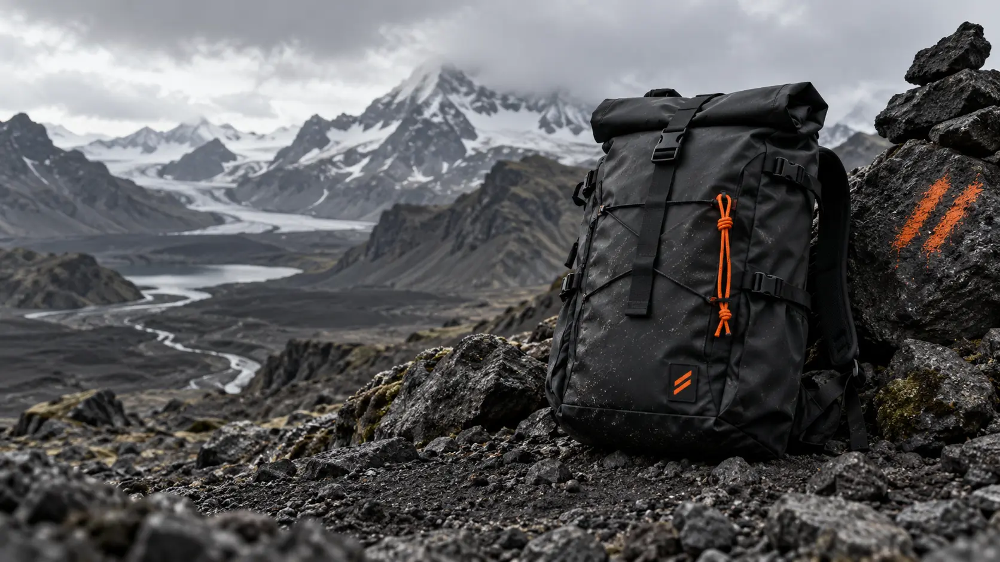
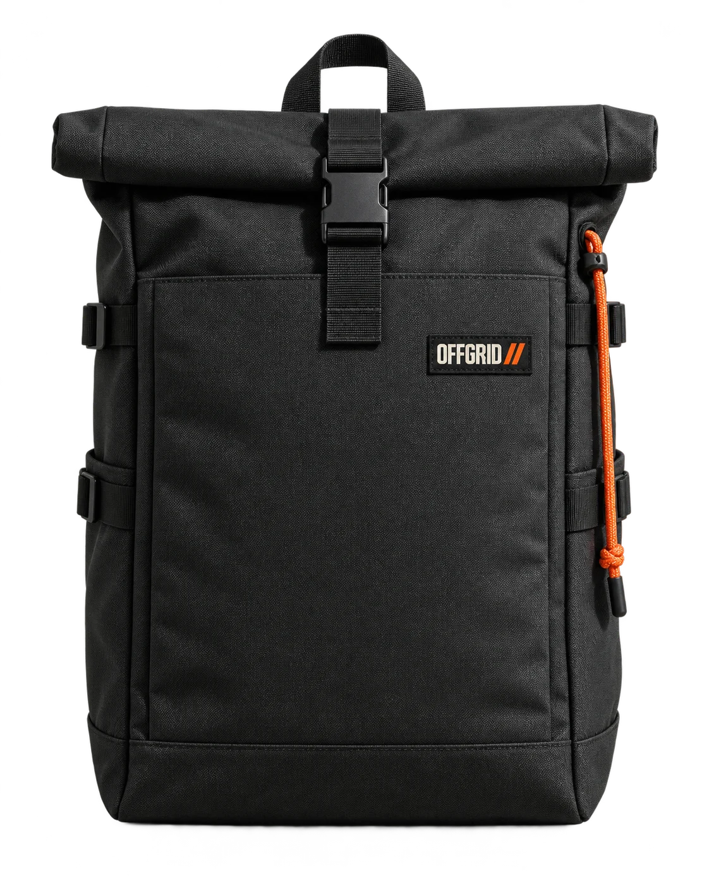
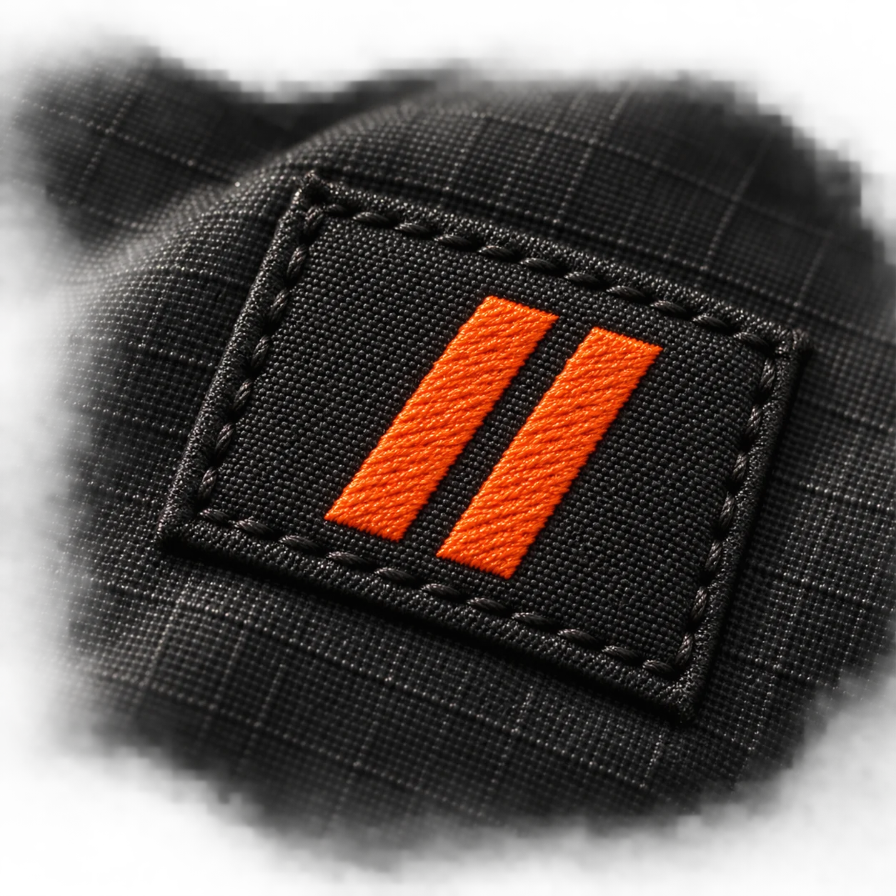
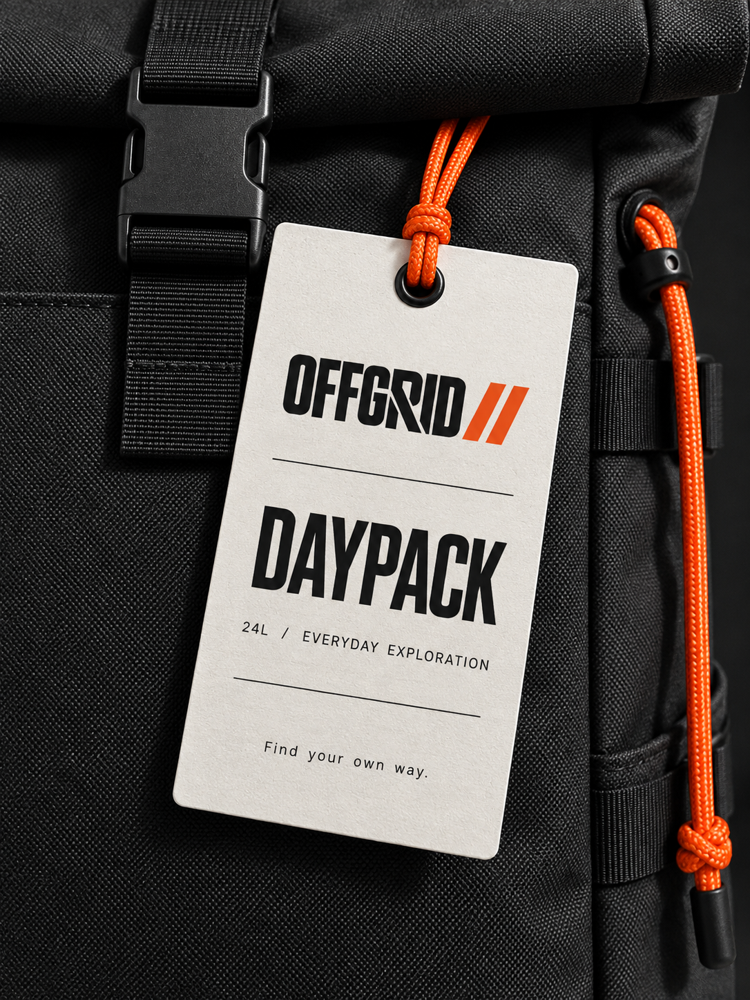
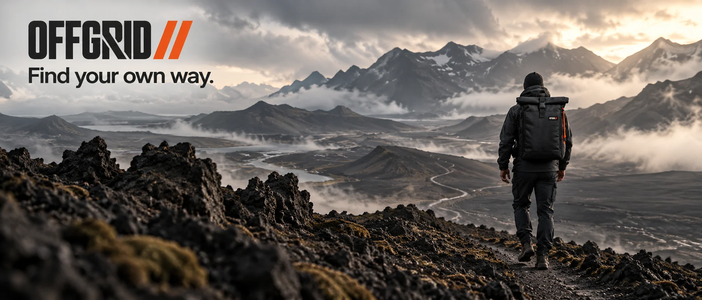
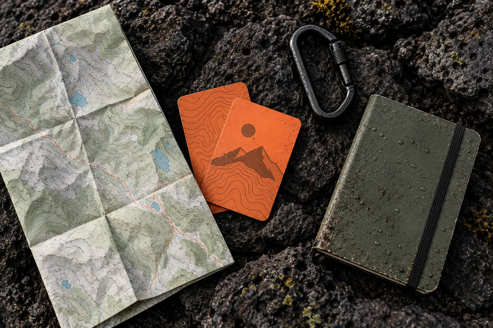
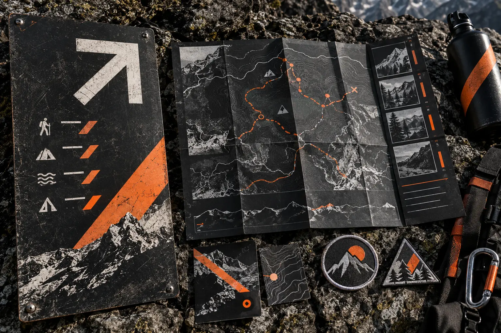
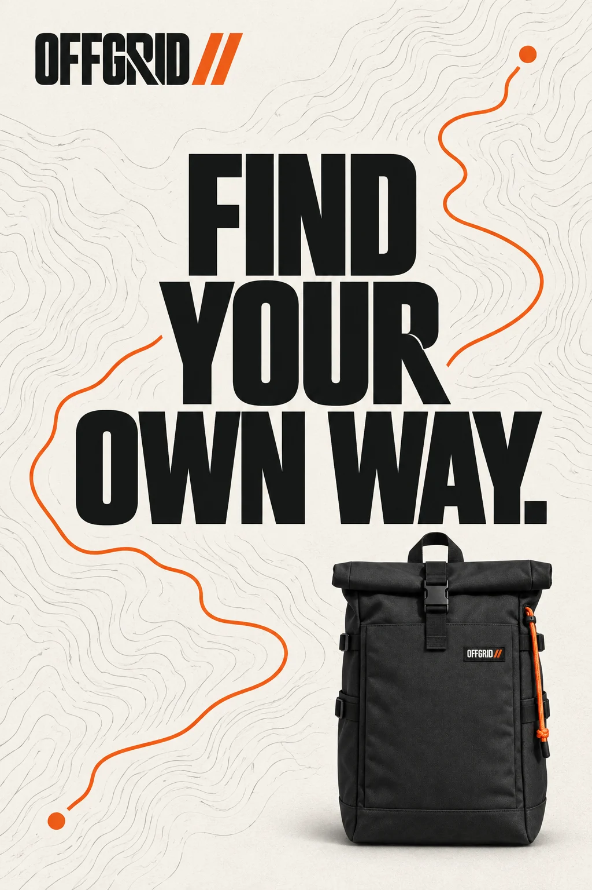
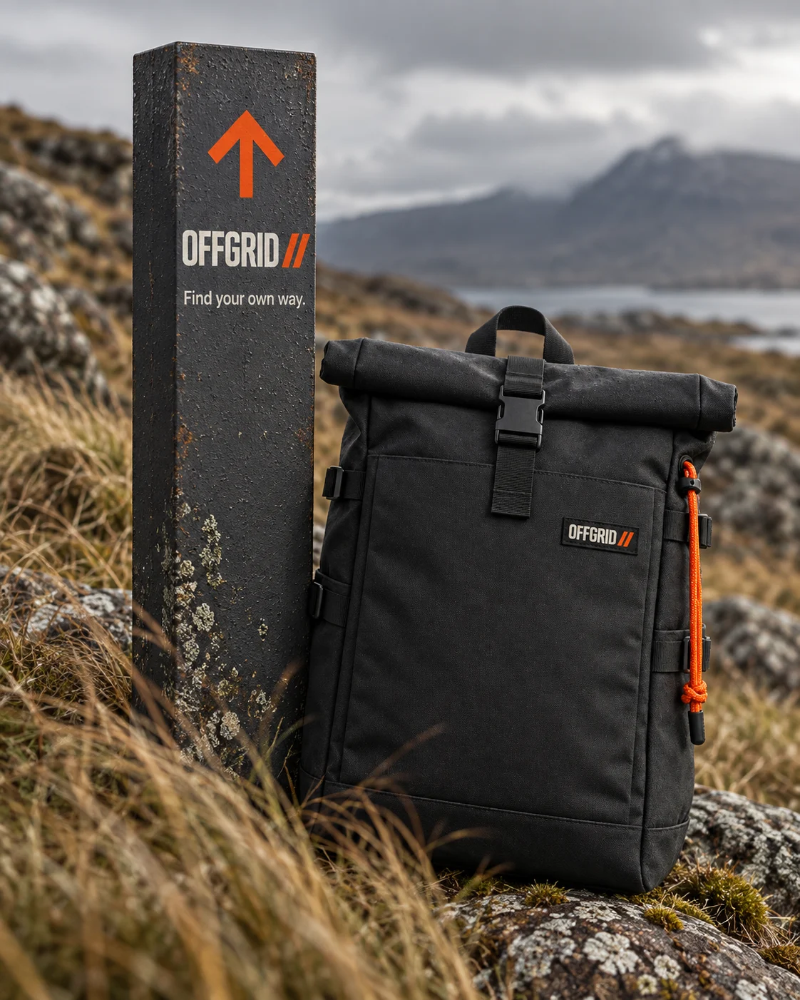
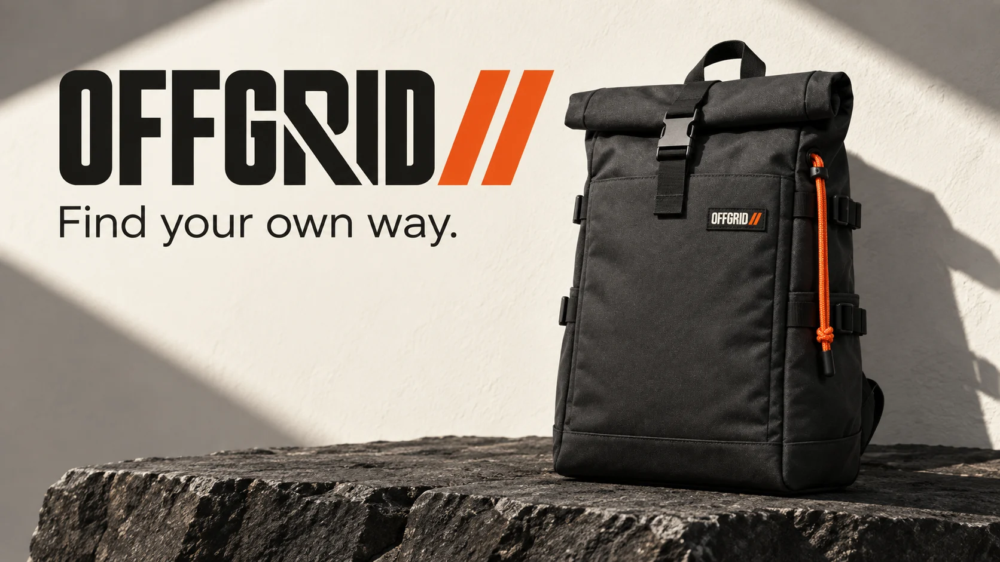

NO NOISE.
A high-impact launch poster led by the slash signal.

Find your own way.
An outdoor equipment identity for everyday departures—functional, direct and free from expedition clichés.
The system behaves like trail information: coordinates, warnings, material data and one unmistakable orange signal.
The parallel slashes work as route marker, product signature and directional device.
Every application is treated as a working object, not decoration.




Wide landscape, hard weather and exposed material replace polished lifestyle imagery.
Maps, field notes and navigation objects turn information into a recognizable brand language.





01 / LOCATE
Coordinates enter in measured steps.
02 / ADVANCE
The route line cuts across the frame.
03 / LOCK
The parallel slashes resolve the sequence.
Five working applications push the identity from equipment to terrain, data and public campaign.
A high-impact launch poster led by the slash signal.
A marker that works without the full wordmark.
Coordinates and material notes form the editorial grid.
A compact woven identification system.
Campaign language designed for motion and hard conditions.
IDENTITY / ART DIRECTION / CAMPAIGN / MOTION DIRECTION